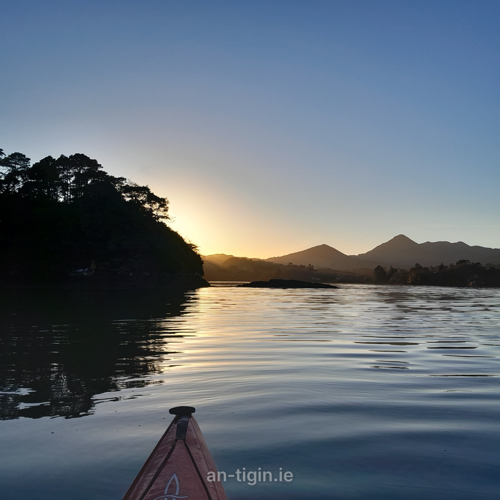

Things to see & do
Activities.
Days out nearby.
Gardens, beaches, boat trips, stone circles and more, from Glengarriff out to Beara, Kerry and West Cork. For hikes and island loops see our Walks page, and for food see Eat. Many places are seasonal, so check opening times before you go.
Activities & sights (click a pin for details) An Tigín
Glengarriff
- Bamboo Park ↗
Exotic seaside garden of bamboos, palms and tree ferns (seasonal)Glengarriff - Bantry Bay Charters ↗
Boat trips and sea angling on Bantry Bay; book ahead in summerGlengarriff Pier - Pooleen Wood & waterfall ↗
Quiet woodland pool, a lovely spot for a swimGlengarriff
Bantry & inland
- Bantry House & Garden ↗
Historic house and terraced gardens above the bay (seasonal)Bantry - O'Donovan Cycles ↗
Bike hire in Bantry townBantry - Waterfall Alpaca Farm ↗
Alpaca walks on a family farm, by appointment onlyDrimoleague
Beara
- Cashelkeelty Stone Circles ↗
Bronze Age stone circles, a short uphill walk from the car parkLauragh - Uragh Stone Circle ↗
Stone circle in a dramatic lake-and-mountain settingTuosist - The Naked Sheep: Alpaca Trekking ↗
Guided treks with alpacasTuosist - Lios Lara Riding Stables ↗
Horse riding on the Beara PeninsulaCastletownbere - Dzogchen Beara ↗
Buddhist retreat centre on the cliffs; meditation sessions (book online)near Allihies - Ballydonegan Beach ↗
Sandy beach below the old copper-mining villageAllihies - Garinish Beach ↗
Small, sheltered beach near the tip of Bearanear Dursey Sound
Kenmare & Kerry
- Bonane Heritage Park ↗
Stone circle, ring fort and other ancient sites on a short trailBonane - Dromquinna Stables ↗
Horse riding by Kenmare BayKenmare - Derrynane House ↗
Daniel O'Connell's ancestral home, with gardens and woodlandCaherdaniel - Derrynane Beach ↗
Long sandy beach and dunes beside Derrynane HouseCaherdaniel - Kells Bay House & Gardens ↗
Subtropical gardens with tree ferns and a rope bridgeKells, Ring of Kerry
Sheep's Head & Mizen
- Ahakista Stone Circle ↗
Small stone circle in a garden setting by the villageAhakista - Barleycove Beach ↗
Dune-backed sandy beach near Mizen Headnear Crookhaven
Baltimore & Skibbereen
- Inish Beg Gardens & Trails ↗
Island estate with gardens and woodland trailsnear Baltimore - Aquaventures ↗
Whale and dolphin watching trips, diving and snorkellingBaltimore - Fastnet Lighthouse ↗
Ireland's Teardrop, seen on a boat trip from Baltimore or Schulloff Cape Clear
These links go to external websites and Google Maps. We are not responsible for their content, so please check opening times and book ahead where needed.